무선설비산업기사 (2012-10-06 기출문제)
1과목: 디지털 전자회로
1. 다음의 논리회로도에서 드모르간(De-morgan)의 정리를 나타내는 것은 어느 것인가?
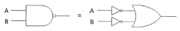
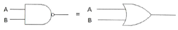
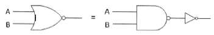
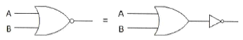
(정답률: 75%)

2. 정현파 발진기로서 부적합한 것은?
- CR 발진기
- 수정 발진기
- LC 발진기
- 멀티바이브레이터
(정답률: 76%)
3. 푸시풀(push-pull) 트랜지스터 전력증폭기에서 바이어스를 완전 B급으로 하지 않은 이유는 무엇인가?
- 효율을 높이기 위해서
- 출력을 크게 하기 위해서
- 큰 위상 변화를 얻기 위해서
- 크로스오버(Cross-over) 왜곡을 줄이기 위해서
(정답률: 86%)
4. TTL(Transistor Transistor Logic) 회로의 특징이 아닌 것은?
- 집적도가 높다.
- 동작속도가 빠르다.
- 소비 전력이 비교적 적다.
- 온도의 영향을 적게 받는다.
(정답률: 80%)
5. 다음 그림은 어떤 회로인가?
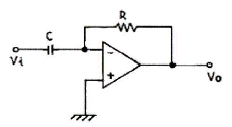
- 미분기
- 적분기
- 가산기
- 검파기
(정답률: 87%)
6. 다음 그림의 회로는 두 개의 비반전 증폭기를 종속 접속한 것이다. 저항 10[kΩ]에 흐르는 전류 ID는 몇 [μA]인가? (단, 각 연산 증폭기는 이상적이다.)
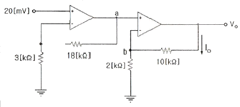
- 25[μA]
- 50[μA]
- 70[μA]
- 120[μA]
(정답률: 64%)
7. 다음 중 차동증폭기의 동상신호제거비 CMRR은? (단, Ac=동상전압이득, Ad=차동전압이득)
- 20 log (Ad/Ac)
- 10 log (Ad/Ac)
- 10 log (Ac/Ad)
- 20 log (Ac/Ad)
(정답률: 75%)
8. 다음 중 정류기의 평활회로에 사용되지 않는 것은?
- 콘덴서
- 저항
- 쵸크코일
- 다이오드
(정답률: 77%)
9. 연산 논리 장치라 하며 CPU 내에서 모든 연산이 이루어지는 곳을 무엇이라고 하는가?
- LSI
- ALU
- Accumulator
- Flag Register
(정답률: 83%)
10. 다음 중 디코더에 대한 설명으로 올바른 것은?
- n비트의 2진 코드를 최대 n개의 서로 다른 정보로 교환하는 조합 논리회로이다.
- 디코더에 Enable 단자를 가지고 있을 때, 디멀티플레서로 사용한다.
- IC 7485는 디코더로서 기능을 사용할 수 있다.
- 상용 IC 74138은 디코더와 디멀티플렉서의 기능을 모두 사용할 수 없다.
(정답률: 68%)
11. 비교회로(Comparator)에 대한 설명 중 옳지 않은 것은?
- 2개의 입력을 비교하여 비교한 결과를 출력에 나타내는 회로이다.
- 출력의 종류는 3가지이다.
- 2개의 입력이 같은 값일 때 출력은 배타적 NOR(XNOR)로 표시된다.
- 2개의 입력이 다른 값일 때 출력은 배타적 OR(XOR)로 표시된다.
(정답률: 69%)
12. AM 변조에서 반송파 전력이 50[kW]일 때, 변조도 70[%]로 변조한다면 피변조파 전력 Pm은 몇 [kW]인가?
- 35.5
- 62.25
- 75.45
- 80.25
(정답률: 70%)
13. 슈미트 트리거 회로에서 최대 루프 이득을 1이 되도록 조정하면 어떻게 되는가?
- 회로의 응답속도가 떨어진다.
- 장시간 높은 안정도를 얻는다.
- 스스로 Reset 할 수 있다.
- 아날로그 정현파가 발생한다.
(정답률: 58%)
14. 다음 중 PCM(펄스부호변조)의 설명으로 옳지 않은 것은?
- S/N비가 좋고 원거리통신에 유용하다.
- 신호파를 표본화시킨다.
- 고가의 여파기가 불필요하다.
- 표본화된 신호를 부호화한 다음에 양자화한다.
(정답률: 87%)
15. 일반적으로 카운터(counter)와 시프트 레지스터(shift register)의 차이점을 가장 잘 표현한 것은?
- 카운터에는 특정한 상태 순서가 있으나, 시프트 레지스터는 상태 순서가 없다.
- 카운터에는 특정한 상태 순서가 없으나, 시프트 레지스터는 상태 순서가 있다.
- 카운터와 시프트 레지스터는 데이터의 이동기능이 주된 목적이다.
- 카운터와 시프트 레지스터는 데이터의 저장기능이 주된 목적이다.
(정답률: 69%)
16. 다음은 콜피츠 발진회로이다. 발진주파수는 약 얼마인가?
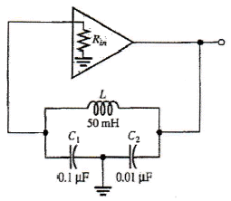
- 5.64[kHz]
- 6.46[kHz]
- 7.46[kHz]
- 8.64[kHz]
(정답률: 64%)
17. 다음 중 클리퍼 회로의 설명으로 옳은 것은?
- 입력 파형을 주어진 기준전압 레벨 이상 또는 이하로 잘라내는 회로
- 일정한 레벨 내에서 신호를 고정시키는 회로
- 특정 시각에 발진 동작을 시키는 회로
- 안정 상태와 준안정 상태를 번갈아 동작하는 회로
(정답률: 89%)
18. 동기식 순서 논리 회로를 바르게 설명한 것은 다음 중 어느 것인가?
- 여러 단의 순서 논리 회로가 한 개의 클록 신호를 공동 이용하여 동작하는 회로
- 여러 단의 순서 논리 회로가 전단의 출력 신호를 이용하는 회로
- 여러 단의 순서 논리 회로가 여러 개의 클록 신호를 이용하는 회로
- 여러 단의 순서 논리 회로가 클록과 출력 신호와는 무관하게 동작하는 회로
(정답률: 72%)
19. 무부하일 때 출력이 50[V]인 직류전원장치가 있다. 1[kΩ] 부하저항을 연결했을 때 출력전압은 40[V]로 떨어졌다. 전압변동률은 백분율로 얼마인가?
- 10[%]
- 15[%]
- 20[%]
- 25[%]
(정답률: 57%)
20. 전파정류회로에서 실효값을 나타내는 식은?
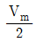
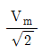
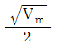
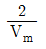
(정답률: 81%)
2과목: 무선통신 기기
21. 다음 그림은 analog 입력신호에 대한 펄스부호변조(PCM) 과정을 나타낸 것이다. (A), (B), (C)에 들어갈 과정으로 올바르게 짝지어진 것은?
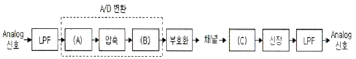
- (A)=양자화, (B)=복호화, (C)=표본화
- (A)=양자화, (B)=표본화, (C)=복호화
- (A)=표본화, (B)=양자화, (C)=복호화
- (A)=표본화, (B)=복호화, (C)=양자화
(정답률: 89%)
22. 지구 상공에 최소한 몇 개의 정지궤도 위성을 적당히 배치하면 극지방을 제외한 모든 지역의 통신이 가능한가?
- 3개
- 4개
- 5개
- 6개
(정답률: 88%)
23. 다음 중 전력변환장치로 가장 적합한 것은?
- 변조기(modulator)와 복조기(demodulator)
- 정류기(rectifier)와 발전기(generator)
- 인버터(inverter)와 컨버터(converter)
- 전원공급기(power supply)와 발진기(oscillator)
(정답률: 90%)
24. 급전선에서 부하저항으로 70[Ω]을 연결하고 측정된 반사계수 값이 0.5인 경우 급전선의 특성임피던스는 약 얼마인가?
- 7[Ω]
- 23[Ω]
- 33[Ω]
- 55[Ω]
(정답률: 64%)
25. 수신기의 종합 특성을 결정하는 파라미터로서 혼신 및 간섭 등을 어느 정도까지 분리 및 제거할 수 있는가의 능력을 나타내는 것은 무엇인가?
- 감도
- 선택도
- 충실도
- 안정도
(정답률: 87%)
26. 주파수에 대한 진폭을 그래프로 표시되도록 고안된 측정 장비는?
- 스펙트럼 분석기
- 계수형 주파수계
- 오실로스코프
- 레벨미터
(정답률: 71%)
27. 축전지에서의 백색 황산연의 발생 방지 방법 중 틀린 것은?
- 충전 후 오래 방치하지 않아야 한다.
- 과 충전을 하지 않아야 한다.
- 충전이 완전히 되도록 한다.
- 과대한 전류로 방전하지 말아야 한다.
(정답률: 73%)
28. 무선통신에서 발생하는 스퓨리어스의 발생원인으로 적합하지 않은 것은?
- 상호 변조
- 주파수 체배
- 푸시풀 증폭
- 증폭기의 비직선성
(정답률: 56%)
29. 다음 중 위성의 수명과 직접적인 관계가 없는 것은?
- 트랜스폰더의 잔존확률
- 탑재연료
- 주파수 자원의 한정
- 태양전지의 성능
(정답률: 78%)
30. 축전지는 양극은 과산화납이 주성분인 판으로, 음극은 납이 주성분인 판으로 구성되어 있다. 다음 설명 중 옳은 것은?
- 양극판과 음극판의 수가 동일하다.
- 양극판 수는 음극판 수보다 한 개가 많다.
- 음극판 수는 양극판 수보다 한 개가 많다.
- 음극판과 양극판의 구별이 없다.
(정답률: 70%)
31. 페이딩(Fading) 감소를 위해 다이버시티 방식을 적용하여 통신하려는 경우 다음 중 해당되지 않는 것은?
- 페이딩 다이버시티
- 공간 다이버시티
- 시간 다이버시티
- 주파수 다이버시티
(정답률: 80%)
32. 동기 방식의 비트 동기는 각 펄스 사이의 주기를 결정하는 요소인데 이는 수신측에서 무엇을 만들기 위해 필요한가?
- 검사 비트
- 클록 펄스
- SMTP
- FTP
(정답률: 88%)
33. 슈퍼헤테로다인 수신기에서 수신주파수가 840[kHz]이고 중간주파수가 455[kHz]인 경우 영상주파수는 얼마인가?
- 255[kHz]
- 385[kHz]
- 1,225[kHz]
- 1,750[kHz]
(정답률: 71%)
34. 고니오미터(Gonio meter)는 무엇을 측정할 때 사용하는가?
- 방송출력
- 상호인덕턴스
- 전파의 도래각
- 대지의 정전용량
(정답률: 87%)
35. SSB 무선송신기의 장점으로 적합하지 않은 것은?
- 점유주파수대폭이 넓어진다.
- 소비전력이 적다.
- 선택성페이딩의 영향이 적다.
- S/N비가 개선된다.
(정답률: 79%)
36. 진폭변조(AM) 송신기의 변조율이 50[%]이고, 반송파 전력이 40[W]인 경우 피변조파의 전력은 얼마인가?
- 35[W]
- 40[W]
- 45[W]
- 50[W]
(정답률: 69%)
37. 다음 스펙트럼분석기의 계통도에서 (A), (B), (C), (D)에 대해 맞게 짝지어진 것은?
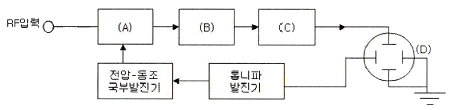
- (A) 혼합기, (B) IF 증폭기, (C) 검출기, (D) CRT
- (A) 검출기, (B) IF 증폭기, (C) 혼합기, (D) CRT
- (A) 혼합기, (B) 검출기, (C) IF 증폭기, (D) CRT
- (A) 검출기, (B) 혼합기, (C) IF 증폭기, (D) CRT
(정답률: 62%)
38. PLL의 기본적인 구성요소를 나타낸 것이다. (A)에 들어갈 요소는?
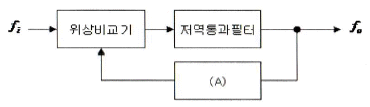
- 전압제어발진기(VCO)
- 샘플링(sampling) 회로
- 증폭기(amplifier)
- 정류기(rectifier)
(정답률: 93%)
39. 위성통신 지구국의 송신부에서 대출력을 얻기 위해서 사용되는 것은?
- 트랜스폰더(Transponder)
- HEMT
- 진행파관(TWT)
- 파라메트릭 증폭기
(정답률: 74%)
40. 다음 중 진폭변조(AM) 방식에 해당하는 것은?
- PWM
- PSK
- QAM
- VSB
(정답률: 72%)
3과목: 안테나 개론
41. 다음 중 지표파 전파가 잘 전파되는 순서부터 나열한 것은?
- 해상, 구릉, 평지, 산악, 사막
- 사막, 산악, 구릉, 평지, 해상
- 해상, 평지, 구릉, 산악, 사막
- 사막, 산악, 평지, 구릉, 해상
(정답률: 77%)
42. 도파관에 대한 설명으로 바르지 못한 것은?
- 원형 도파관에서는 TE11 모드가 기본모드이다.
- 도파관에는 각 모드에 대응하는 차단 파장이 존재하지 않는다.
- 도파관용 창은 도파관용 필터, 공동 공진기의 출력을 얻는데 사용된다.
- 도파관 내의 임피던스는 슬롯이 있는 도체판을 관내에 삽입하여 전자계 분포를 변화시킴으로써 변경이 가능하다.
(정답률: 78%)
43. 송신기의 급전선에서 최대전압이 66[V]이고, 이 선로에서의 반사계수(Γ)가 0.5인 경우 급전선에서의 최소 전압[V]는 얼마인가?
- 66
- 33
- 22
- 36
(정답률: 76%)
44. 다음 중 라디오 덕트의 생성원인에 의한 분류로 적합하지 않은 것은?
- 이류성 덕트
- 접지형 덕트
- 전선에 의한 덕트
- 야간냉각에 의한 덕트
(정답률: 56%)
45. 일반적인 동축케이블과 도파관의 전자계에 대한 설명 중 바르지 못한 것은?
- TEM 모드에서는 전파의 진행방향에 전계, 자계 성분이 없다.
- TEM 모드에서는 전파진행의 직각방향에 전계와 자계가 존재한다.
- TEM은 동축케이블 내에는 존재하나 도파관 내에는 존재하지 않는다.
- 도파관과 동축케이블 모두에 차단 파장은 없다.
(정답률: 69%)
46. 정재파비(VSWR)에 대한 설명으로 바르지 못한 것은?
- 전압 정재파비는 정재파의 최대전압과 최소전압의 비로 정의된다.
- 전류 정재파비는 정재파의 최대전류와 최소전류의 비로 정의된다.
- 선로상에서 근접한 최대치와 다음 최대치의 간격은 반파장거리이다.
- 임피던스가 완전히 정합된 경우 정재파비 S=0의 관계가 있다.
(정답률: 85%)
47. 전자파가 자유공간을 진행할 때 단위시간당 단위면적을 통과하는 에너지 밀도를 나타낸 것은?
- 포인팅 전력
- 파동 방정식
- 맥스웰 방정식
- 암페어 법칙
(정답률: 79%)
48. 중파 방송국의 송신 안테나에서 발사되는 전파는?
- 원형 편파
- 수평 편파
- 타원 편파
- 수직 편파
(정답률: 73%)
49. 안테나의 고유 주파수를 높이기 위한 방법이 아닌 것은?
- 센터 로딩(center loading)
- 로우 로딩(low loading)
- 베이스 로딩(base loading)
- 탑 로딩(top loading)
(정답률: 68%)
50. 전파(電波)가 전파(傳播)하는 통로인 대지에서 기적 성질이 변한 곳이 있으면 그 지점에서 전파의 굴절작용에 의해 전파의 진행방향이 변화되는데 이 현상에 의한 오차를 무엇이라 하는가?
- 야간 오차
- 해안선 오차
- 대척점 오차
- 편파 오차
(정답률: 67%)
51. 다음 항목 중 가장 큰 값은 어느 것인가?
- 등가 지구반경 계수(K)
- 수정굴절률(m)
- M단위 수정굴절률(M)
- 표준대기의 굴절률(n)
(정답률: 59%)
52. 공진회로에서 1.5[H]의 인덕터와 0.4[μF]의 캐패시터가 직렬 연결된 경우 공진주파수는 약 얼마인가?
- 103[Hz]
- 2⑤[Hz]
- 301[Hz]
- 4⑤[Hz]
(정답률: 75%)
53. 대류권의 변동현상에 의한 페이딩의 분류에 포함되지 않는 것은?
- 선택성 페이딩
- 감쇠형 페이딩
- 덕트형 페이딩
- 산란형 페이딩
(정답률: 57%)
54. 반파장 다이폴 안테나에 대한 설명으로 바르지 못한 것은?
- 안테나의 길이는 λ/2이다.
- 전류의 크기는 양쪽 끝에서 최소가 된다.
- 전압의 크기는 양쪽 끝에서 최대가 된다.
- 반사형 안테나이다.
(정답률: 80%)
55. 동축케이블에서 비유전율이 2.3인 폴리스틸렌을 매질로 사용하는 경우에 특성 임피던스는 약 얼마인가? (단, 동축케이블의 손실이 최소가 되는 조건으로 D/d=3.6이 되는 조건)
- 35[Ω]
- 50[Ω]
- 75[Ω]
- 100[Ω]
(정답률: 71%)
56. 다음 중 지상파에 포함되지 않는 전파는 어느 것인가?
- 직접파
- 대지 반사파
- 지표파
- 전리층 반사파
(정답률: 87%)
57. 전송 선로의 특성 임피던스가 50+j0.01[Ω]이고, 부하 임피던스가 73-j42.5[Ω]일 때 정재파비는 얼마인가?
- 2.21
- 0.37
- 1.37
- 0.63
(정답률: 53%)
58. 길이가 25[m]인 λ/4 수직접지 공중선의 공진주파수는 얼마인가?(오류 신고가 접수된 문제입니다. 반드시 정답과 해설을 확인하시기 바랍니다.)
- 1.5[MHz]
- 3[MHz]
- 6[MHz]
- 12[MHz]
(정답률: 59%)
59. 다음 중 초단파의 전파 특성에 대한 설명으로 바르지 못한 것은?
- 주파수가 높기 때문에 지표파는 감쇠가 심하다.
- 태양의 활동에 따라 수신 강도의 변화는 단파보다 영향이 심하다.
- 대기의 굴절 때문에 기하학적 가시거리보다 약간 멀리까지 도달한다.
- 직접파의 대지 반사파에 의해서 전계강도가 정해진다.
(정답률: 73%)
60. 다음 중 전파투시도(지형단면도)에 대한 설명으로 바르지 못한 것은?
- 전파통로상에서 수평방향의 장애물을 살펴볼 때 편리하다.
- 전파통로를 나타내는 지구 단면도로 Profile Map이라고도 한다.
- 등가지구 반경계수 K를 고려하여 작성해야 한다.
- 전파통로를 직선으로 취급할 수 있게 된다.
(정답률: 71%)
4과목: 전자계산기 일반 및 무선설비기준
61. 단측파대(SSB) 통신에서 전파형식이 J3E, R3E 및 H3E인 경우 점유주파수대폭의 허용치는?
- 3[kHz]
- 5[kHz]
- 1[MHz]
- 6[MHz]
(정답률: 80%)
62. 전파의 반송파전력을 나타낸 표시는 어느 것인가?
- PZ
- PR
- PX
- PY
(정답률: 71%)
63. 다음 중 산업용 전파응용설비의 안전시설 설치 조건으로 틀린 것은?
- 충전되는 기구와 전선은 외부에서 닿지 아니하도록 절연(차폐체) 또는 접지된 금속차폐체내에 수용할 것
- 설비의 조작시 인체와 전기적 양도체에 고주파전력을 유발할 우려가 있는 경우에는 그 위험을 방지하기 위하여 필요한 설비를 할 것
- 인체의 안전을 위하여 접지장치를 설치할 것
- 설비와 대지 간 접지저항 값을 무한대로 설치할 것
(정답률: 87%)
64. 다음 중 무선국 검사의 종류가 아닌 것은?
- 준공검사
- 정기검사
- 임시검사
- 사용전 검사
(정답률: 85%)
65. 다음 중 적합성평가를 받아야 하는 선박국용 양방향 무선전화장치의 전파형식 기호로 맞는 것은?
- F3E 및 G3E
- R3E 및 J3E
- A3E 및 R3E
- G3E 및 A3E
(정답률: 75%)
66. 다음 중 송신설비의 공중선ㆍ급전선 등 고압전기를 통하는 장치는 사람이 보행하거나 기거하는 평면으로부터 몇 [m] 이상의 높이에 설치되어야 하는가?
- 2.5[m] 이상
- 3[m] 이상
- 3.5[m] 이상
- 4[m] 이상
(정답률: 87%)
67. 공중선계가 충족하여야 하는 조건이 아닌 것은?
- 공중선은 이득이 높을 것
- 정합은 신호의 반사손실이 최소화 되도록 할 것
- 지향성은 복사되는 전력이 목표하는 방향을 벗어나지 아니하도록 할 것
- 급전선에 공급되는 전력을 규격전력 이상이 되도록 할 것
(정답률: 76%)
68. 다음 중 전파사용료를 부가하기 위해 산정하는 기준으로 틀린 것은?
- 사용주파수 대역
- 사용 전파의 폭
- 공중선 전력
- 무선국의 소비전력
(정답률: 77%)
69. 다음 중 공중선계에 접지장치를 설치하지 않아도 되는 무선국은?
- 육상이동국
- 기지국
- 방송국
- 고정국
(정답률: 87%)
70. 디지털 텔레비전 방송국의 송신설비에서 공중선전력의 허용편차는 상한과 하한에서 각각 몇 [%]씩 허용되는가? (상한 허용치, 하한 허용치)
- 5[%], 10[%]
- 10[%], 20[%]
- 5[%], 5[%]
- 20[%], 10[%]
(정답률: 65%)
71. 임베디드 보드의 롬(ROM)에 저장되어 하드웨어를 제어하기 위해 작성된 프로그램을 무엇이라고 하는가?
- 스파이웨어(spyware)
- 프리웨어(freeware)
- 펌웨어(firmware)
- 멀웨어(malware)
(정답률: 89%)
72. 2진수 1001에 대한 1의 보수와 2의 보수의 표현으로 옳은 것은?
- 1101, 0110
- 0110, 0111
- 0111, 1110
- 0101, 0111
(정답률: 85%)
73. 부동소수점 연산에서 정규화를 하는 주된 이유는 무엇인가?
- 유효 숫자를 늘리기 위해서이다.
- 연산 속도를 증가시키기 위해서이다.
- 숫자 표시를 간단히 하기 위해서이다.
- 보다 큰 숫자를 표시하기 위해서이다.
(정답률: 57%)
74. 다음은 프로그램에 대한 설명이다. 틀린 것은?
- Supervisor Program : 처리 프로그램의 중추적인 역할로, 제어 프로그램의 실행과정과 시스템 전체의 동작 상태를 감시하는 역할을 한다.
- Job Management Program : 작업의 연속적인 진행을 위한 준비와 처리 기능을 수행하다.
- Data Management Program : 파일의 조작, 처리, 자료 전송, 데이터의 표준을 처리한다.
- Problem Processing Program : 사용자가 업무적인 필요에 의해서 작성한다.
(정답률: 68%)
75. 다음 중 디스크에 있는 대량의 데이터를 복사 혹은 이동시킬 때에 CPU를 거치지 않고 직접 처리하는 방식은?
- 인터럽트(Interrupt)
- DMA(Direct Memory Access)
- 캐싱(Caching)
- 스풀링(Spooling)
(정답률: 84%)
76. 버스 마스터(Bus Master)에 관한 설명 중 맞는 것은?
- 독자적인 데이터 전송을 위해 직접적으로 버스 요청 신호를 생성할 수 있는 기능장치
- 버스에 대한 요청 권한이 없는 수동적인 기능장치
- 버스 사용권자를 결정하게 하는 하드웨어 장치
- 버스 허가, 버스 요청 및 버스 사용중 등 3개의 제어신호를 이용하는 장치
(정답률: 71%)
77. 데이터의 특정 비트를 추가하거나 두개 이상의 데이터를 결합하는데 편리한 연산자는 무엇인가?
- Rotate
- Complement
- MOVE
- OR
(정답률: 82%)
78. 스래싱 현상이 발생했을 때 해결방법으로 틀린 것은?
- 부족한 자원을 증설한다.
- 일부 프로세스들을 중단한다.
- 모든 프로세스들을 중단한다.
- 다중 프로그래밍의 정도를 높여준다.
(정답률: 58%)
79. 다음 그림과 같은 트리를 Pre-Order로 운영할 때, 5번째 방문하는 트리는?
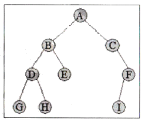
- A
- B
- D
- H
(정답률: 75%)
80. CPU가 실행하여야 할 명령어의 수가 75개인 경우 명령어 구분을 위한 명령코드(op-code)는 최소한 몇 비트가 필요한가?
- 5비트
- 6비트
- 7비트
- 8비트
(정답률: 82%)
드모르간의 정리는 AND와 OR 연산자를 서로 바꾸고 모든 입력값을 반전시키는 것이다. 이 논리회로도에서는 AND와 OR 연산자가 반전되고, 입력값도 모두 반전되어 있다. 따라서 드모르간의 정리가 적용되어 ""가 된다.